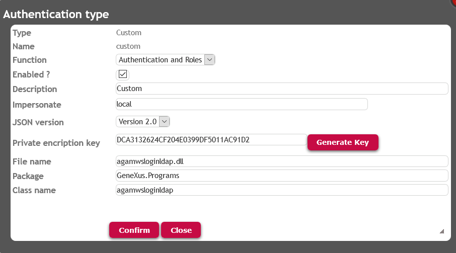
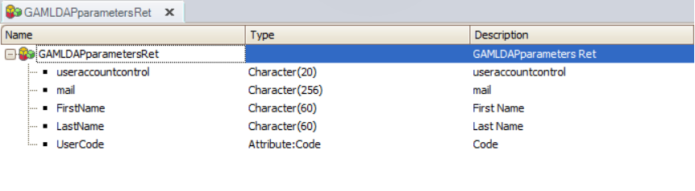

When you need your application to use LDAP authentication, and you also need the advantages of GeneXus Access Manager (GAM), you can use an external program or web service to make a bridge between the GAM application and your LDAP.
LDAP offers so many options in terms of vendors and solutions, there isn't an "LDAP GAM Authentication Type", because there should be one for each implementation. Anyway, you can authenticate using your LDAP as a third party authenticator or identity provider, while GAM is enabled in your KB.
Here you will find how to configure GAM to authenticate using LDAP.
The solution consists of using any of these authentication types:
When any of these types of authentication is used, GeneXus Access Manager is not the owner of the user credentials; only the user name and other information that depends on the external program output will be stored in GAM Repository. Information on roles can also be incorporated in GAM Repository if the external program returns this information.
The following is an example where an Active Directory it is used, works as an identity provider to authenticate the users of the application. The Custom Authentication Type was chosen to implement the solution.
Using GAM Custom Authentication Type, GAM delegates the authentication to an external program (which can be developed using GeneXus). In this example, the external program will make the communication to LDAP.
Remember that in most cases, sending some additional parameters to the external program is necessary (besides the obvious ones such as username and password). In addition, the external program that communicates with LDAP will return additional data, not only the basic data of the user. That's the reason why need to use GAM - External Authentication: version 2.0.
Following the steps explained in GAM - Custom Authentication Type, configure the external program that is going to communicate with LDAP.
In the example, the authentication is delegated to an external program called "gamwsloginLDAP".

The data types used in this program are explained in External Authentication: version 2.0, and are basically: GAMWSLoginInSDT Type and GAMWSLoginOutSDT data type.
The parameters are sent to the program as strings in JSON format (although the structure is based on the SDTs mentioned above).
| Variable name | Data Type |
| GAMWSLoginIn | GAMWSLoginInSDT |
| GAMWSLoginOut | GAMWSLoginOutSDT |
As explained before, when the Authentication Type is custom, the parameters have to be strings (in JSON format following the structure of the GAMWSLoginInSDT Type and GAMWSLoginOutSDT data type).
Parm(in:&StrInput, out:&StrOutput);
The Procedure that makes the communication to LDAP - "gamwsloginLDAP"- looks as follows:
//Private key to decrypt parametrers
&Key = 'DCA3132624CF204E0399DF5011AC91D2'
//////Get the &GAMWSLoginIn data fron the input///////////
&GAMWSLoginIn.FromJson(&StrInput)
//////Get the Login information entered by the end user/////
&UserLogin = Decrypt64( &GAMWSLoginIn.Login, &Key )
&UserPassword = Decrypt64( &GAMWSLoginIn.Password, &Key )
//////Build the output parameter/////////////////////////////////////
&GAMWSLoginOut = new()
&GAMWSLoginOut.WSVersion = GAMAutExtWebServiceVersions.GAM20
do "validate user"
&StrOutput = &GAMWSLoginOut.ToJson()
sub "validate user"
&Input_Parameters = &GAMWSLoginIn.CustomParameters
For &ParameterIN in &Input_Parameters
if &ParameterIN.Id = 'LDAPpath'
&strpath = &ParameterIN.Value
else
if &ParameterIN.Id = 'LDAPFilter'
&filter = &ParameterIN.Value
endif
endif
endfor
&UserName = GetUserName(&UserLogin) //Ex: "CN=" + &UserLogin +",OU=Promotions,OU=Marketing,DC=sampledomain,DC=local"
connectLDAP.Call(&strpath,&UserName,&UserPassword,&filter,&GAMLDAPParametersRet,&result)
if &result = 0
&GAMWSLoginOut.WSStatus = 1
&GAMWSLoginOut.User.Code = &GAMLDAPParametersRet.UserCode
&GAMWSLoginOut.User.FirstName = &GAMLDAPParametersRet.FirstName
&GAMWSLoginOut.User.LastName = &GAMLDAPParametersRet.LastName
&GAMWSLoginOut.User.EMail = &GAMLDAPParametersRet.mail
&GAMWSLoginOut.ApplicationData = &GAMLDAPParametersRet.ToJson()
else
if &result = 2
&GAMWSLoginOut.WSStatus = 5
&GAMWSLoginOut.WSMessage = "Invalid user or password."
else
&GAMWSLoginOut.WSStatus = 6
&GAMWSLoginOut.WSMessage = "User unknown."
endif
endif
endsub
ConnectLDAP is a Procedure that tries to connect to LDAP given some parameters. The parameters in this example are &username, &userpassword, &strpath of the LDAP (eg: LDAP://server1.sampledomain.local/ou=promotions, ou=marketing,dc=sampledomain,dc=local), and a &filter (eg: sn=Smith). The additional parameters &strpath and &filter are received through the CustomParameters of the GAMWSLoginInSDT data type (See #1 above).
Depending on the parameters required to perform the authentication, you will need to vary the code shown in the example above.
The Procedure ConnectLDAP returns the user information in the &GAMLDAPParametersRet out parameter. The information returned depends on the application's needs.
In this particular example, it returned the following: First Name, Last Name, Email, User Code, and UserAccountControl.

In the GAMExampleLogin Web Panel, you need to set the input parameters of the external program that performs the authentication.
| Variable name | Data Type |
| &CustomProperty | GAMProperty (predefined data type) |
| &GAMLDAPParametersRet | GAMLDAPParametersRet SDT Data Type (see #3) |
The login code is as follows:
/////////////Load the input data to pass to the external authentication program/////////
CustomProperty = new()
&CustomProperty.Id = "LDAPpath"
&CustomProperty.Token = "LDAPpath"
&CustomProperty.Value = "LDAP://server1.sampledomain.local/ou=promotions, ou=marketing,dc=sampledomain,dc=local"
&AdditionalParameter.Properties.Add(&CustomProperty)
&CustomProperty = new()
&CustomProperty.Id = "LDAPFilter"
&CustomProperty.Token = "LDAPFilter"
&CustomProperty.Value = "sn=" + &surname
&AdditionalParameter.Properties.Add(&CustomProperty)
&AdditionalParameter.AuthenticationTypeName = &LogOnTo
/////////////////////////////////////////////Login User //////////////////////////////////////////////////////////////
&LoginOK = GAMRepository.Login(&UserName, &UserPassword, &AdditionalParameter, &Errors )
If &LoginOK
///////////////////////////Get my custom application data in json format ////////////
&ApplicationData = GAMSession.GetApplicationData()
If not &ApplicationData.IsEmpty()
&GAMLDAPParametersRet.FromJson(&ApplicationData)
&UserAccountControl = &GAMLDAPParametersRet.useraccountcontrol
Endif
else
//Process Errors
Endif
The external program gamwsloginLDAP is automatically called when the login is invoked, and the parameters are automatically sent.
Note that the UserAccountControl —which is an additional parameter returned— is retrieved using the GetApplicationData method of GAMSession object.
Consider that this is an example adapted to one scenario (an Active Directory). Depending on the LDAP used (the parameters required for login, and the desired parameters to get from the LDAP), the code will vary.
Managing Roles through external authentication programs
| Backlinks |
| Toc:GeneXus Access Manager (GAM) |